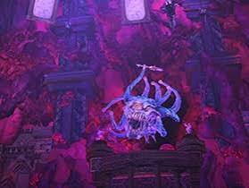

TRIAL MECHANICS
GZEMNID'S RELIQUARY
Mirrors. Chains. Cubes. Old bosses. Seven phases of concentrated chaos.

OVERVIEW
GZEMNID'S RELIQUARY
Gzemnid's Reliquary is a seven-phase trial that repeatedly tests spread, stack, tank-swap, positioning and add-control mechanics.
Several mechanics introduced early return later in harder combinations, so recognising their markers is essential.
LEARN THESE FIRST
CORE MECHANICS
- Mirror Beams: mirrors fire lethal beams across the arena. Find a gap between the beams quickly.
- Withering Ray: a purple debuff deals damage over time and ends with Necrotic Blast, an AoE around the affected player. Stay away from the group when it expires or is cleansed.
- Disintegration Ray: an orange beam applies heavy damage over time to one player. Healers should watch the target closely.
- Chains of Undeath: two players are tethered. Stay apart or move far enough away to break the chain. Colliding can cause lethal AoE damage.
- Telekinesis: a player with a blue spiral can launch nearby players into the air. Stay away from them.
- Petrifying Ray: move out of the red area or be turned to stone and disabled.
PHASE ONE
MINOTAUR
- Avoid the Minotaur's large frontal cone.
- His thrown axe targets a random player and can be dodged.
- Add waves spawn at approximately 75%, 50% and 25% health.
- Stop damaging the boss and clear the add wave each time.
- The off-tank should help control the adds and mini-boss.
- Avoid red areas and keep Withering Ray away from the group.
- When the Minotaur dies, move away from the centre. Gzemnid spawns there and a tank must take aggro immediately.
PHASE TWO
GZEMNID
- Withering Ray and Chains of Undeath continue from Phase One.
- Gaseous Expulsion creates a red danger area. Move out immediately.
- Disintegrated Armor stacks on the active tank, increasing incoming damage.
- Tanks should normally swap at around two stacks.
- Petrifying Ray now targets tanks.
- Mirror beams can activate from two walls at once. Find a safe gap quickly.
GROUP CHECK
IMMOLATION BLAST
- Immolation Blast deals massive damage to the entire group.
- Prepare group mitigation before the blast resolves.
- The blast applies Burn afterward. Cleanse it as soon as possible.
- Watch for Withering Ray expiring at the same time, as Necrotic Blast can kill stacked players.
STACK MECHANIC
ARCANE CALAMITY
- Arcane Calamity is shared damage.
- Group around the marked player to split the hit.
- Players affected by Chains of Undeath or an expiring Withering Ray may need to remain away from the stack.
KEY MECHANIC
OBLITERATE & ARTIFACTS
- Obliterate targets a tank and deals extremely heavy damage.
- The tank should block the hit.
- Obliterate is followed by an Obliteration Wave across the arena.
- Two Artifacts appear during Phase Two and apply either player debuffs or boss buffs.
- To destroy an Artifact, the tank must position the Obliterate AoE directly over it.
- Only one Artifact can normally be removed in this phase, so choose which negative effect the group wants eliminated.
PHASE TWO
MECHANIC ROTATION
- Obliterate
- Mirrors
- Immolation Blast
- Artifacts
- Arcane Calamity
- Obliterate
- Mirrors
- Arcane Calamity
- Repeat
PHASE THREE
RANDOM BOSS PAIR
- The group faces one of four possible boss combinations.
- Split into two parties: one tank, one healer and three DPS per boss.
- Keep both bosses within approximately 20% health of each other.
- If one boss falls too far behind, the lower-health boss becomes shielded.
- Both bosses must be killed within the phase timer.
POSSIBLE PAIR
HALASTER & PALHAVORITHYN
HALASTER
- Watch the elemental orbs around the platform to identify Lightning, Fire or Ice mechanics.
- Double Disintegration Wave covers most of the platform. Watch the Halaster images in the sky to identify the safe area.
- Death from Above lands in the centre afterward. Damage decreases the farther away you are.
- Lightning spread: move away from previous player positions, then spread individual red circles apart.
- Magnetic Attraction: same charges move together before being pushed apart; opposite charges move apart before being pulled together. Do not collide.
- Fire Eruption follows a player. Keep moving away from each successive fire area.
- Searing Chain: tethered players move far apart to break it.
- Permafrost freezes players. Keep the ice intact until Whiteout resolves, then free the trapped players.
- Double Hypothermia requires two separate stack groups. Do not overlap them.
PALHAVORITHYN
- Avoid the tail swipe behind the dragon.
- Force Breath can knock players off the platform. Block or avoid the cone.
- Landing Impact marks one player with a red area. Move it away from the group.
- After landing, the dragon pushes everyone away. Position so the push sends you toward safe ground.
POSSIBLE PAIR
STORVALD & VALINDRA
STORVALD
- Duumvirate is heavy shared tank damage.
- Winter's Fury requires all four glowing runes around the arena to be occupied.
- Leaving a rune uncovered can wipe the group.
- Permafrost freezes two players. Break them free before the ice kills them.
VALINDRA
- Necrotic Miasma creates persistent red areas. Place them away from runes and the group.
- Necrotic Bolt is a solo red-circle mechanic. Move away and take the hit alone.
- Defiling Beam is shared damage. Stack together to split it.
POSSIBLE PAIR
ZARIEL & ATROPAL
ZARIEL
- Weight of Virtue is unavoidable group damage. Mitigate it.
- Judgement stuns the active tank. The second tank must take aggro before the killing hit lands.
- Four glowing runes must each contain at least one player.
- Sword Clusters target players with lines. Aim the lines away from the group.
ATROPAL
- Uncontrollable Turmoil is shared damage. Stack together.
- Inner and Outer Turmoil cover large sections of the arena. Move to the safe half.
- Lingering Turmoil leaves a persistent danger zone. Place it at the edge.
- Pull: start near the outside and move outward.
- Push: immediately move to the inside and resist outward movement.
POSSIBLE PAIR
DEMOGORGON & TIAMAT
- Demogorgon applies Madness throughout the encounter.
- Increasing Madness progressively disables player abilities.
- Sanity Wells remove Madness but are single-use until they recharge.
- Avoid Demogorgon's frontal and rear cones, as they add significant Madness.
- When your Paranoid Delusion appears, kill your own copy quickly.
- Vile Swarm leaves a damaging, dazing area. Move it away.
- Living Conduit is shared damage. Stack to split it.
- Eruption follows its target with repeated danger zones. Keep moving.
- Ice freezes everyone caught inside the marked area. Keep it away from others.
PHASE FOUR
GZEMNID'S CLONES
- The raid splits back into its two parties.
- Four Beholders occupy the arena.
- A large rotating flamethrower divides the arena. Touching it is lethal.
- Each tank should control two Beholders.
- Focus one Beholder at a time.
- Previous mechanics return: Immolation Blast, Petrifying Ray, Withering Ray, Necrotic Blast and Disintegration Ray.
- A defeated Beholder becomes a ghost and continues attacking.
- The phase ends only when all four are defeated.
PHASE FIVE
GZEMNID RETURNS
- All previous Gzemnid mechanics continue.
- Necrotic Slam is a large tank cone. Tanks should keep it away from other players.
- Deep Claw hits every player with an AoE. Spread apart so nobody is hit by two overlapping attacks.
KEY PHASE FIVE MECHANIC
GELATINOUS CUBES
- Four cubes spawn and move around the arena.
- Touching a cube traps and disables the player inside it.
- Do not immediately destroy the cubes.
- During Immolation Blast, three players receive Fire Vulnerability markers.
- Marked players cannot survive the blast normally.
- Fire Vulnerability players must intentionally enter a Gelatinous Cube before Immolation Blast lands.
- After the blast, destroy the cubes to release them.
PHASE FIVE
DOUBLE MECHANICS
- Both tanks receive Obliterate.
- Three Artifacts can appear. Each tank should destroy one with Obliterate, leaving one effect active.
- Double Arcane Calamity creates two simultaneous stack mechanics.
- Split into your two parties and stack separately.
- Do not overlap the two groups.
PHASE FIVE
MECHANIC ROTATION
- Necrotic Slam + Deep Claw
- Gaseous Expulsion
- Double Obliterate
- Gelatinous Cubes
- Double Arcane Calamity
- Immolation Blast + Fire Vulnerability
- Necrotic Slam + Deep Claw
- Gaseous Expulsion
- Artifacts
- Mirror Grid + Double Arcane Calamity
- Double Obliterate
- Mirrors + Immolation Blast
- Repeat
PHASE SIX
CLONES AGAIN
- This phase works like Phase Four.
- Split into the two parties and defeat all four Beholders.
- The large lethal rotating flamethrower returns.
- A second smaller flamethrower also rotates around the arena.
- The smaller beam rotates faster and can be jumped over.
- Continue rotating around the arena while killing all four Beholders.
FINAL PHASE
GZEMNID FINAL BURN
- The playable arena gradually shrinks.
- The closing barrier kills anyone who touches or crosses it.
- This creates a hard damage check: kill Gzemnid before the arena becomes too small.
- Chains of Undeath return.
- Gaseous Expulsion returns.
- Double Obliterate and Double Arcane Calamity return.
- Telekinesis, Petrifying Ray and Withering Ray return.
- Necrotic Slam and Deep Claw return.
- Immolation Blast returns and can push players toward the lethal barrier.
- Two mirror sets appear at right angles to each other, leaving only a section of the shrinking arena safe.
- Pay close attention to mechanics requiring stacking immediately before or after mechanics requiring spreading.
QUICK REFERENCE
RELIQUARY SURVIVAL NOTES
- Mirror beam → find the gap.
- Purple Withering Ray → move away before it explodes.
- Chains → stay apart.
- Blue spiral → stay away from that player.
- Petrifying red → move.
- Tank debuff stacks → swap.
- Arcane Calamity → stack.
- Double Arcane Calamity → two separate stacks.
- Deep Claw → spread.
- Obliterate → tank uses it to destroy chosen Artifact.
- Fire Vulnerability → get inside a cube before Immolation.
- Cube player survives blast → kill cube and free them.
- Random boss pair → keep health within 20%.
- Final phase → burn Gzemnid before the arena closes.